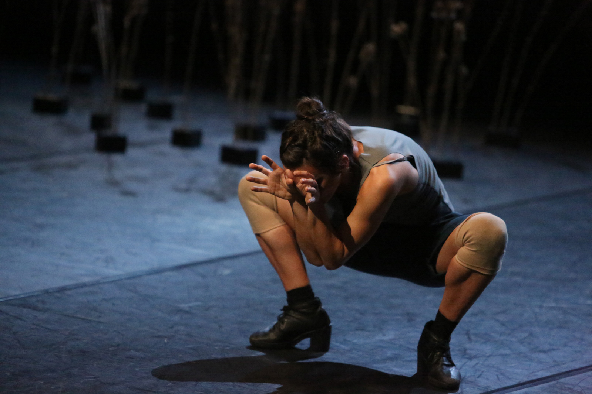
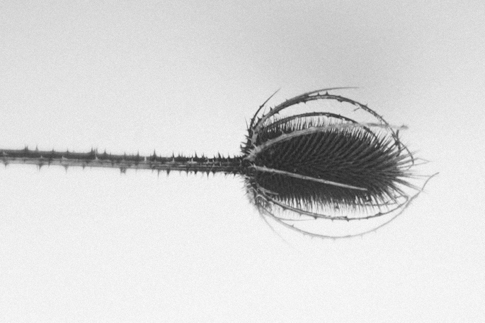

Tiny
Tiny explores the body as an archive filled with personal and cultural memories, phantasies, invisible forces, distant echoes, sounds, scents, and images. Space is shaped, experienced, and constructed by the identification and selection of personal traces, through an internal process of transmutation which interlaces the external, and contaminates the space in an eternal game of resonance.
Tiny is a research on so-called limit-zones where there is no true separation between the external universe and internal contents. Here, the Ego is defined by its relationships with the outside: never isolated from what surrounds it, it learns from them how to comprehend.
Tiny reflects on how the human being exists in the world by inhabiting a space. To inhabit takes on the meaning of embracing, traversing, dwelling and staying among things. Space is not before us, nor other than us. Inhabiting is here the result of thought, far to be abstract instead perfectly connected to one’s feeling. A “sensitive” thinking originated and nurtured by the instinctive desire to reconnect with the real essence of things.
Production Cab 008.
With the support of Regione Toscana and MiBACT, Promozione Danza della Fondazione
Romaeuropa, CSC Centro per la scena contemporanea Bassano del Grappa, L’Arboreto – Teatro Dimora di
Mondaino.
In collaboration with DIDstudio / Ariella Vidach AiEP and Macelli di Certaldo.
Created and performed by
Annamaria Ajmone
Music
Marcello Gori
Light Design
Giulia Pastore
Artistic Consultancy
Maria Giovanna Cicciari
Costumes
Caned Icoda
Organized and curated by
Giulia Basaglia
PRESS
“Annamaria Ajmone. Un viaggio minuscolo”, Marinella Guatterini
Il Sole 24 Ore (2015)
"Il corpo e le tracce dell'io", Francesca Pedroni
Il Manifesto (2015)
"DNA a Romaeuropa. La danza che (r)esiste", Sergio Lo Gatto
Teatro e Critica (2015)
"Autunno danza: beate gioventù e dannate emozioni", Renzo Francabandera
PAC (2015)
"Abitare il mondo. A proposito di "Tiny" di Annamaria Ajmone", Alessandra Corsini
Altre Velocità (2015)